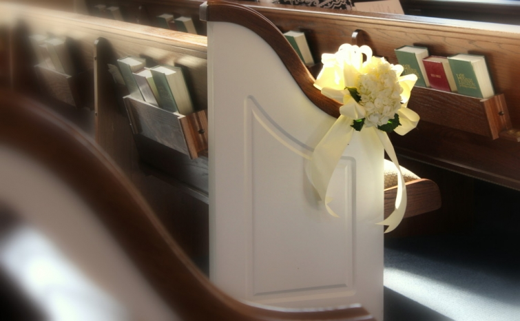
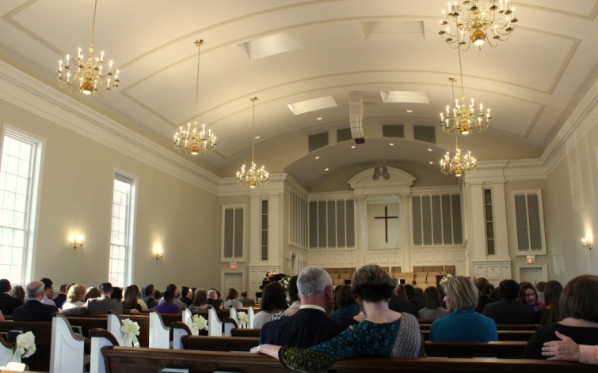

.png)
.PNG)
.PNG)
.PNG)
.PNG)
.PNG)
.JPG)
.JPG)
.PNG)
.PNG)


You may recall the week before Christmas my friend Kelly and I hosted a shower for one of our daughter’s dear friends. Well, her wedding was Saturday, and because so many of you have asked to see the snapshots from the event, I’d like to share some of them with you today. Now I want you to remember, I can take photos of rooms and furniture til the cows come home. Rooms and furniture don’t move! A live action photographer I am not. So please forgive the fuzzy action photos as you peruse this post. Okay?
A wedding is most definitely a celebration, and it seems that many couples today are choosing to have their celebration in creative locations apart from the church. In fact, our Methodist church only hosted 6 – yes 6! weddings during the entire 2015 year. A church wedding is a rare thing around here. So it was nice to be able to return to the Baptist church I grew up in for this ceremony…the very Baptist church where my husband and I were married. 🙂
The ceremony began with a beautiful performance of Amazing Grace by the groom’s uncle.
(Jay is a very talented musician. 🙂 )
 The families were then seated. First, the grandparents and then…
The families were then seated. First, the grandparents and then…
the groom’s mother and father…
followed by the mother of the bride.
Then the 10 bridesmaids began their march down the aisle to the music of How Great Thou Art.
The maid of honor…
The fabulous wedding planner and the flower girl…
And then the gorgeous bride was escorted down the aisle by her father.
Sweet vows were spoken and rings were exchanged.
The groom’s father shared a passage from Ephesians.
Candles were lit. The pastor pronounced them married, and then it was time to kiss the bride. 🙂
And just like that…they were married. 🙂
The wedding party made their way back down the aisle.
(Our daughter was one of the bridesmaids.)
And then it was time to close the doors…
and move to another location for the reception. 🙂
That location was Tryphena’s Gardens, a nearby wedding venue.
Aren’t the grounds lovely, even in February?!
The bride used white hydrangeas for the flowers in both the wedding and the reception.
These gorgeous arrangements were on most of the tables.
Hydrangeas and baby’s breath graced the wedding cake as well.
Outside the reception hall a table was set up for guests to leave the newlyweds a note of good wishes,
and barrels held up a table for wedding gifts.
There was a cold beverage table…
a hot beverage station…
and boiled peanuts as appetizers. 🙂
After they finished their photography at the church, the wedding party arrived
(with flowers from the sanctuary in hand!)
Everyone had dinner, and then the bride and groom had their first dance…
followed by the traditional father-daughter dance…
the mother-son dance…
and even a surprise very sweet mother-daughter dance. 🙂
After everyone had fun on the dance floor, the wedding cake was cut by the couple
(and smeared over their faces!)
And the groom’s aunt (one of my college roommates! 🙂 ) served the rest of the delicious cake to the remaining guests (with help from two very special and hardworking ladies I know.)
And then my husband and I called it a night…leaving everyone else to party on for another hour or so.
The wedding ceremony was sooo sweet, and the reception was a lot of fun. I had the opportunity to visit with some of my teacher friends that I have not seen in a while and some of the groom’s relatives that I have not seen in decades! The wedding brought together the family and friends of two wonderful families for a special evening sharing in and celebrating the love of a young couple…a perfect start to their new life together.
So congratulations to Brittany and Johnathan!
May your life continue to be full of love
and filled with joyous celebrations among family and friends. 🙂
All my best to you…


.PNG)
What a sweet and beautiful wedding! Thanks for sharing. I hope they will have a life filled with happiness.
DiAnne
————————————————————————-
It was a very sweet one! And your wishes for them are sweet as well. 🙂
Kelly
Hi Kelly! Thanks for sharing this gorgeous wedding! I’m a huge wedding lover so this post was a real treat for the eyes! 🙂 The bride and the bridesmaids looked amazing!
Wish you a very nice day,
Xo
Claire
———————————————————————-
My pleasure Claire. I too love weddings, so this one was not only sweet and pretty, but also fun for me. I thought everyone looked just beautiful. 🙂
Kelly
There’s nothing quite like a wedding and loved seeing this one – you made me feel like I was there…beautiful!
———————————————————————–
I’m so glad you loved seeing this one. It really was a sweet one.
Kelly
while reading your wonderful post I couldn’t help but think of how life happens in phases. We haven’t had a wedding in our family for over 3 years, but have had a great many births lately. I think my favorite phase is when the grandchildren are little. I wish you many of them when the weddings are all done. Truly it will be the best time of your life.
———————————————————————
You are so right about the phases Sharon. We are just starting into the bridal shower and wedding phase. It is a fun one to me, but I am sure I would love a grandkids phase too. For now, I will just enjoy the babies of our nieces. 🙂
Kelly
What a lovely and sweet wedding. I was surprised that you said there aren’t very many church weddings anymore. Where are young people getting married?
Very pretty and your daughter looks beautiful, like her mommy. 🙂
xo,
Karen
———————————————————————–
Karen, most of the couples around here are choosing event venues for their weddings….barns, gardens, plantations, historic homes…anything but a church. Two of the last 3 we have attended were in barns.
Thank you for the compliments on my daughter and me. You are too kind!
Kelly
Love wedding posts! This was beautiful 🙂 Would it be possible to find out who the bridesmaid dresses are by?? My daughter’s SIL just got engaged and is starting to look at dresses…
———————————————————————
I love them too Amber. It is so much fun to see how couples put their mark on ceremonies and receptions. 🙂 The bridesmaids’ dresses were made by Azazie. There are similar ones on their website, but this one was called Sienna and it is being retired. (It is in their clearance section right now.)
Kelly
What a simple but elegant wedding, absolutely beautiful! Thanks for sharing their special day! And your photography skills were wonderful! Congratulations to Brittany and Jonathan.
———————————————————————–
Thank you for all your kind words Cindy. It was a simply elegant wedding that everyone seemed to enjoy.
Kelly
First, Congratulations to the happy couple, and I wish them a long and happy life together!
Thanks so much for the photos, they were lovely,as were all the wedding party. It was a beautiful wedding. So many are over the top with everything, and it takes away from the reason for the day. This was tasteful and intimate, just what it should be!I wish I could give my girls another wedding, I enjoyed the process so much! 😉 But hubs says no, dang it! I LOVE weddings so much! I watch all the bridal shows on tv, just so I can see weddings. Silly me! If I were younger, I would try my hand at working in some capacity with weddings, but I would want to attend them all!
———————————————————————-
You sound like a real fan of weddings Marianne! I think you should look at working with wedding planning. You would be perfect for it!
I’m so glad you enjoyed reading the post about this wedding. It was a lovely event.
Kelly
Oh….how sweet. I love weddings!! Such a lovely wedding and very handsome bride and groom. Your daughter was a lovely bridesmaid! Thanks for sharing this special time with us.
———————————————————————
Thank you Debbie, and thank you for the compliments for our daughter. It was a lovely wedding for sure.
Kelly
A lovely wedding!! I am seeing most weddings are not held in churches here in NoAla too. Wedding venues seem to be the trend these days.
———————————————————————-
Yes, church weddings don’t seem to be in vogue around here now. I am wondering when the pendulum will swing back the other way again.
Kelly
What a beautiful wedding! The church was certainly beautiful too and how fun to return to a place that holds so many memories for you. 🙂 The reception venue was lovely as well. It’s always fun to see all the details. Thanks for sharing with us. I am looking forward to two summer weddings of our great niece in June and her brother in August. 🙂
———————————————————————
Oh my goodness! Two weddings in one family! That is a lot of work, but I know it will be pretty. Enjoy the celebrations!
Kelly
Thank you for sharing. We may have a wedding (daughter)in our near future–so beginning to look for ideas. Appreciate all your posting of ideas and fabulous parties. They are propelling me want to move forward with getting my home “party/event ready”.
———————————————————————-
How exciting Kristy! Yes, it is never too early to begin getting ideas for the big day. There are so many wonderfully creative ideas out there!
Kelly
Kelly, you did a wonderful job taking photos and what a lovely wedding. We did hydrangeas for our daughter’s wedding…love those flowers and they fill in a lot…who ever chose them made a good choice.
———————————————————————
Thank you Cheri. It was a pretty wedding so I wanted to capture as much of it as I could. You made a good point about the hydrangeas really filling in the arrangements. A smart choice!
Kelly
You did a great job on photography, and weren’t the flowers lovely! I have to confess that usually I don’t care for the color sometimes referred to as “blush”, but those bridesmaids’ dresses were absolutely gorgeous, and the almost neutral color was becoming to every girl who wore it, no matter what her coloring. I’m changing my opinion of “blush”! Probably, the fact that the dress was worn by such a beautiful crop of bridesmaids didn’t hurt!
———————————————————————
Thanks Ruth! Yes, the flowers were so beautiful! All of the bridesmaids really did look pretty (but I know they were cold when they were taking photos outside….a shawl or shrug would have been a good idea for them at that point.)
Kelly
Such a beautiful wedding, and every detail looked amazing.
———————————————————————–
Thanks for reading the post Marty. I’m happy you enjoyed the wedding!
Kelly
Nothing beats a beautiful church wedding!
(also a Baptist/Methodist combo here as well!)
Best wishes to the beautiful couple.
———————————————————————
Thanks Leslie Anne! I think there are a lot of Baptist/Methodist combos running around here. 🙂
Kelly
Now, that was fun! I love weddings! I was hoping you would be able to share the wedding with us. Everything was so pretty and how wonderful that Brittany and Johnathan have this special post of their wedding… a very sweet gift from you to them! The bride and all of the bridesmaids were lovely and the dresses were stunning! Thank you for sharing the wedding with us. Best wishes to the beautiful bride and groom!
————————————————————————
It was fun to be there, and I am so glad it was fun for you to read about Kathy. 🙂 Thank you for all your kind words about the event. You have loved it!
Kelly
I love seeing the pictures of the wedding. Beautiful! My son is getting married at the end of May and I enjoy seeing other ideas.
———————————————————————–
Oh goodness! If you have a May wedding in your family, I bet you are busy Donna. Best wishes to your son and his bride!
Kelly
Oh, Kelly, I’m so pleased you shared this day with us. I was hoping you would! What a beautiful bride, a lovely couple. The bridesmaid’s dresses are quite lovely, so feminine and all the girls looked gorgeous. Glad you enjoyed the day and how nice to have shared it with friends. Enjoy your week.
———————————————————————-
Brittany was such a beautiful bride! And I thought the bridesmaids all looked lovely too. I am so happy you enjoyed reading the post. It was a fun one to write! 🙂 Thanks for reading and taking the time to comment Tricia.
Kelly
I love weddings. You captured this joyous day so well. I have scrolled through three times already. The pictures conveyed such a sweet feeling. The flowers had a simplistic elegance complimented so well by the color of the bridesmaid’s tastefully designed dresses. It makes me wish I had been there..such a beautiful wedding! Thank you for sharing it with us..such a treat!
Sherry
———————————————————————-
Thank you Sherry. 3 times? Wow!! I am glad you liked reading about the wedding. It was a treat to be a guest there. 🙂
Kelly
Beautiful wedding. I love weddings, I guess most epople do! They are such a cute couple. Hope they are blessed with MANY years of happiness.
———————————————————————
I think most females enjoy weddings…but guys? Not so much. LOL Thank you for your sweet wishes for Brittany and Johnathan, Pinky!
Kelly
Beautiful pictures, Kelly! It really was a joyful occasion. It was so good to see you again, as you said, after decades! Where did all those years go?
——————————————————————–
Thank you Pam! Yes, it was such a joy filled ceremony and reception. I was thrilled to be able to see you and all your relatives. Wish we could have had more time to catch up. Goodness knows, I have no idea where the years went! I just know they went too fast!
Kelly
Kelly, You are just great at everything you do. I enjoyed the pictures and wonderful feeling of love and joy from your descriptions. Your daughter is just as beautiful as you.
———————————————————————–
No, I am afraid I am so not great at everything, but I do enjoy a good party. 🙂 The wedding was a lot of fun, and I am glad you enjoyed the photos of it. It was easy to photograph all those happy people! Thank you for your very sweet compliments. 🙂
Kelly
Hi Kelly. The pictures were lovely as well as all those participating. I thought the coloring of the bridesmaids dresses, so pretty, was very Mary of Downtown Abbey-ish! Hope you are having some nice downtime with your family after a very, very busy week.
———————————————————————–
Yes, it did look Downton-ish now that you mention it! Quite elegant. Thank you for our kind words about the wedding party.
Kelly
Gorgeous bridesmaids dresses! Sometimes they aren’t so pretty. All the girls looked lovely and the bride was beautiful too!
———————————————————————
I know it is hard to find dresses that look good on all body types and all different skin and hair colors, but I think those dresses were lovely on all of the girls. And of course, the bride was beautiful. Thank you for reading and commenting Peggy!
Kelly
Oh my goodness…pass the tissues! I think you might have found another “calling” as wedding photographer, you did a wonderful job Kelly. Those bridesmaid dresses are simply gorgeous, and the bride is stunning (as is your daughter). I teared up at the daddy/daughter dance, as well as the mother/son dance. My son and I had a dance at his reception, still makes me teary-eyed.
Today is beautiful here in central Alabama…I’ve been doing some cleaning in the sun room and throwing out dead flowers on the deck. Got the french doors wide open in the sun room and letting the breeze blow!
Love following along on your new adventures Kelly, I can see that retirement agrees with you!
————————————————————————
Thank you so much Judy! I don’t think I can focus my camera fast enough to be a wedding photographer. LOL I bet you cry at all weddings. I do too, and yes the dances were all sooo sweet. Definitely cry-worthy!
Our weather has been gorgeous today. Spring is almost here, but you know we will have another cold spell when Easter gets here. That is just the way it is in the South. Can you believe it will be time for daylight savings time on the 13th??? It will be time to mow the lawn again before we know it.
Kelly
Don’t we all enjoy weddings?
Thanks for sharing.
———————————————————————-
Yes, we do and especially when they are as fun as this one was!
Kelly
Congratulations to the bride and groom! I think you’ve captured their special day really well Kelly. The feeling of joy and happiness seems to be radiating out of my ipad! 🙂 it was obviously a wonderful day for you all. Your daughter looks beautiful as does the bride, other bridesmaids and the bride and grooms mums. Really gorgeous, elegant dresses. My daughter and her fiancé are starting to make plans for their wedding next summer so I’m especially interested in weddings at the moment 🙂 so thanks for sharing this one!
Rosemary
———————————————————————
Thank you Rosemary. I’m so glad you could get a sense of the joy of the day, because it really did have that overwhelming feeling. I loved how the bridesmaids’ dresses flowed making them elegant like you said. Good luck with YOUR wedding planning! It is a lot of work AND a lot of fun. 🙂
Thank you for visiting the post today!
Kelly